SMOKE / PIPELINE CHECK ONLY — full scientific study not run
Small-replication smoke outputs check implementation and reporting. They do not establish superiority, tail reliability, or asymptotic constants.
448 unique simulated trajectories; 896 analysis memberships. Reused reward/joint endpoints are counted once as simulations.
Every coverage, incorrect-label, and empty-intersection path is retained. Execution failures are separate from these scientific flags. Cohorts and source groups remain separate. Means weight environmental cells equally; reported SEs are stratified Monte Carlo SEs. Paired differences are left minus right. Bonferroni families are defined by cohort, group, suite, and metric; subgroup intervals are descriptive.
Manifest status: PASS. Execution failure records: 0. Expected unique paths: 448.
| group | suite | method | cells | paths | replications_min | replications_max | regret_mean | regret_mcse | area_mean | eta_fraction_mean |
|---|---|---|---|---|---|---|---|---|---|---|
| f17 | joint | ACI | 4 | 16 | 4 | 4 | 7.3078 | 0.69949 | 1448.1 | 0.76895 |
| f17 | joint | AUER | 4 | 16 | 4 | 4 | 25.137 | 0.58414 | 1284.8 | 0.67096 |
| f17 | joint | BL-MOSS-b0.5 | 4 | 16 | 4 | 4 | 8.2792 | 0.85788 | 1402.6 | 0.74167 |
| f17 | joint | BL-MOSS-b1 | 4 | 16 | 4 | 4 | 8.2792 | 0.85788 | 1402.6 | 0.74167 |
| f17 | joint | BL-MOSS-b2 | 4 | 16 | 4 | 4 | 8.2792 | 0.85788 | 1402.6 | 0.74167 |
| f17 | joint | Bayes-UCB | 4 | 16 | 4 | 4 | 5.8075 | 0.6826 | 1629.6 | 0.87793 |
| f17 | joint | Clipped-ACI | 4 | 16 | 4 | 4 | 7.3078 | 0.69949 | 1448.1 | 0.76895 |
| f17 | joint | Empirical-KL-UCB | 4 | 16 | 4 | 4 | 5.2552 | 0.70077 | 1552.9 | 0.83186 |
| f17 | joint | Growing-MOSS | 4 | 16 | 4 | 4 | 8.2941 | 0.86833 | 1406.8 | 0.74415 |
| f17 | joint | IMED | 4 | 16 | 4 | 4 | 4.5644 | 0.69737 | 1560.9 | 0.83666 |
| f17 | joint | KL-UCB+ | 4 | 16 | 4 | 4 | 6.1874 | 0.74062 | 1502.8 | 0.80177 |
| f17 | joint | KL-UCB-c0 | 4 | 16 | 4 | 4 | 6.6783 | 0.69699 | 1476.4 | 0.78594 |
| f17 | joint | KL-UCB-c3 | 4 | 16 | 4 | 4 | 8.4139 | 0.71726 | 1410.1 | 0.74614 |
| f17 | joint | MOSS-T-currentK | 4 | 16 | 4 | 4 | 8.2792 | 0.85788 | 1402.6 | 0.74167 |
| f17 | joint | SB-EXP3-ATGT | 4 | 16 | 4 | 4 | 35.472 | 1.3757 | 1358.8 | 0.71537 |
| f17 | joint | SRC-KL-L060 | 4 | 16 | 4 | 4 | 22.017 | 1.9326 | 1304.7 | 0.68289 |
| f17 | joint | SRC-KL-R | 4 | 16 | 4 | 4 | 7.3626 | 0.76109 | 1448.2 | 0.76902 |
| f17 | joint | SRC-KL-area | 4 | 16 | 4 | 4 | 44.191 | 1.7553 | 1161.6 | 0.59698 |
| f17 | joint | SRC-L060 | 4 | 16 | 4 | 4 | 21.388 | 1.9732 | 1304.7 | 0.68289 |
| f17 | joint | SRC-R | 4 | 16 | 4 | 4 | 4.4479 | 1.035 | 1632.1 | 0.87939 |
| f17 | joint | SRC-area | 4 | 16 | 4 | 4 | 44.191 | 1.7553 | 1161.6 | 0.59698 |
| f17 | joint | TS | 4 | 16 | 4 | 4 | 7.8777 | 1.5198 | 1538.2 | 0.82304 |
| f17 | joint | TS-Jeffreys | 4 | 16 | 4 | 4 | 7.13 | 1.0393 | 1579.9 | 0.84806 |
| f17 | joint | TS-SMAB-bounded | 4 | 16 | 4 | 4 | 8.3644 | 1.1971 | 1456.1 | 0.77375 |
| f17 | joint | UCB-V | 4 | 16 | 4 | 4 | 15.565 | 0.85797 | 1338.2 | 0.70299 |
| f17 | joint | UCB-log2t-c3 | 4 | 16 | 4 | 4 | 16.01 | 0.84857 | 1349.8 | 0.70993 |
| f17 | joint | UCB1 | 4 | 16 | 4 | 4 | 12.538 | 0.61612 | 1373.9 | 0.72445 |
| f17 | joint | UCB1-Tuned | 4 | 16 | 4 | 4 | 5.8496 | 0.72811 | 1614.2 | 0.86866 |
| f17 | reward | ACI | 4 | 16 | 4 | 4 | 7.3078 | 0.69949 | 1448.1 | 0.76895 |
| f17 | reward | AUER | 4 | 16 | 4 | 4 | 25.137 | 0.58414 | 1284.8 | 0.67096 |
| f17 | reward | BL-MOSS-b0.5 | 4 | 16 | 4 | 4 | 8.2792 | 0.85788 | 1402.6 | 0.74167 |
| f17 | reward | BL-MOSS-b1 | 4 | 16 | 4 | 4 | 8.2792 | 0.85788 | 1402.6 | 0.74167 |
| f17 | reward | BL-MOSS-b2 | 4 | 16 | 4 | 4 | 8.2792 | 0.85788 | 1402.6 | 0.74167 |
| f17 | reward | Bayes-UCB | 4 | 16 | 4 | 4 | 5.8075 | 0.6826 | 1629.6 | 0.87793 |
| f17 | reward | Clipped-ACI | 4 | 16 | 4 | 4 | 7.3078 | 0.69949 | 1448.1 | 0.76895 |
| f17 | reward | Empirical-KL-UCB | 4 | 16 | 4 | 4 | 5.2552 | 0.70077 | 1552.9 | 0.83186 |
| f17 | reward | Growing-MOSS | 4 | 16 | 4 | 4 | 8.2941 | 0.86833 | 1406.8 | 0.74415 |
| f17 | reward | IMED | 4 | 16 | 4 | 4 | 4.5644 | 0.69737 | 1560.9 | 0.83666 |
| f17 | reward | KL-UCB+ | 4 | 16 | 4 | 4 | 6.1874 | 0.74062 | 1502.8 | 0.80177 |
| f17 | reward | KL-UCB-c0 | 4 | 16 | 4 | 4 | 6.6783 | 0.69699 | 1476.4 | 0.78594 |
| f17 | reward | KL-UCB-c3 | 4 | 16 | 4 | 4 | 8.4139 | 0.71726 | 1410.1 | 0.74614 |
| f17 | reward | MOSS-T-currentK | 4 | 16 | 4 | 4 | 8.2792 | 0.85788 | 1402.6 | 0.74167 |
| f17 | reward | SB-EXP3-ATGT | 4 | 16 | 4 | 4 | 35.472 | 1.3757 | 1358.8 | 0.71537 |
| f17 | reward | SRC-KL-L060 | 4 | 16 | 4 | 4 | 22.017 | 1.9326 | 1304.7 | 0.68289 |
| f17 | reward | SRC-KL-R | 4 | 16 | 4 | 4 | 7.3626 | 0.76109 | 1448.2 | 0.76902 |
| f17 | reward | SRC-KL-area | 4 | 16 | 4 | 4 | 44.191 | 1.7553 | 1161.6 | 0.59698 |
| f17 | reward | SRC-L060 | 4 | 16 | 4 | 4 | 21.388 | 1.9732 | 1304.7 | 0.68289 |
| f17 | reward | SRC-R | 4 | 16 | 4 | 4 | 4.4479 | 1.035 | 1632.1 | 0.87939 |
| f17 | reward | SRC-area | 4 | 16 | 4 | 4 | 44.191 | 1.7553 | 1161.6 | 0.59698 |
| f17 | reward | TS | 4 | 16 | 4 | 4 | 7.8777 | 1.5198 | 1538.2 | 0.82304 |
| f17 | reward | TS-Jeffreys | 4 | 16 | 4 | 4 | 7.13 | 1.0393 | 1579.9 | 0.84806 |
| f17 | reward | TS-SMAB-bounded | 4 | 16 | 4 | 4 | 8.3644 | 1.1971 | 1456.1 | 0.77375 |
| f17 | reward | UCB-V | 4 | 16 | 4 | 4 | 15.565 | 0.85797 | 1338.2 | 0.70299 |
| f17 | reward | UCB-log2t-c3 | 4 | 16 | 4 | 4 | 16.01 | 0.84857 | 1349.8 | 0.70993 |
| f17 | reward | UCB1 | 4 | 16 | 4 | 4 | 12.538 | 0.61612 | 1373.9 | 0.72445 |
| f17 | reward | UCB1-Tuned | 4 | 16 | 4 | 4 | 5.8496 | 0.72811 | 1614.2 | 0.86866 |
| cohort | group | suite | left | right | metric | pairs | difference | mcse | adjusted_low | adjusted_high | unmatched_left | unmatched_right |
|---|---|---|---|---|---|---|---|---|---|---|---|---|
| smoke | f17 | joint | SRC-KL-L060 | SRC-L060 | regret | 16 | 0.629 | 0.16525 | -0.16055 | 1.4185 | 0 | 0 |
| smoke | f17 | joint | SRC-KL-R | SRC-R | regret | 16 | 2.9147 | 0.38602 | 1.2713 | 4.5581 | 0 | 0 |
| smoke | f17 | joint | SRC-KL-area | SRC-area | regret | 16 | 0 | 0 | 0 | 0 | 0 | 0 |
| smoke | f17 | joint | SRC-KL-L060 | SRC-L060 | area | 16 | 0 | 0 | 0 | 0 | 0 | 0 |
| smoke | f17 | joint | SRC-KL-R | SRC-R | area | 16 | -183.88 | 30.89 | -330.66 | -37.087 | 0 | 0 |
| smoke | f17 | joint | SRC-KL-area | SRC-area | area | 16 | 0 | 0 | 0 | 0 | 0 | 0 |
| smoke | f17 | joint | SRC-KL-L060 | SRC-L060 | area_all | 16 | 0 | 0 | 0 | 0 | 0 | 0 |
| smoke | f17 | joint | SRC-KL-R | SRC-R | area_all | 16 | -183.88 | 30.89 | -330.66 | -37.087 | 0 | 0 |
| smoke | f17 | joint | SRC-KL-area | SRC-area | area_all | 16 | 0 | 0 | 0 | 0 | 0 | 0 |
| smoke | f17 | joint | SRC-KL-L060 | SRC-L060 | eta_fraction | 16 | 0 | 0 | 0 | 0 | 0 | 0 |
| smoke | f17 | joint | SRC-KL-R | SRC-R | eta_fraction | 16 | -0.11037 | 0.018541 | -0.19848 | -0.022261 | 0 | 0 |
| smoke | f17 | joint | SRC-KL-area | SRC-area | eta_fraction | 16 | 0 | 0 | 0 | 0 | 0 | 0 |
| smoke | f17 | reward | SRC-KL-L060 | SRC-L060 | regret | 16 | 0.629 | 0.16525 | -1.3963 | 2.6543 | 0 | 0 |
| smoke | f17 | reward | SRC-KL-R | SRC-R | regret | 16 | 2.9147 | 0.38602 | -0.85479 | 6.6842 | 0 | 0 |
| smoke | f17 | reward | SRC-KL-area | SRC-area | regret | 16 | 0 | 0 | 0 | 0 | 0 | 0 |
| cohort | group | suite | method | paths | label_error_paths | coverage_error_paths | empty_intersection_paths |
|---|---|---|---|---|---|---|---|
| smoke | f17 | joint | ACI | 16 | 0 | 0 | 0 |
| smoke | f17 | joint | AUER | 16 | 0 | 0 | 0 |
| smoke | f17 | joint | BL-MOSS-b0.5 | 16 | 0 | 0 | 0 |
| smoke | f17 | joint | BL-MOSS-b1 | 16 | 0 | 0 | 0 |
| smoke | f17 | joint | BL-MOSS-b2 | 16 | 0 | 0 | 0 |
| smoke | f17 | joint | Bayes-UCB | 16 | 0 | 0 | 0 |
| smoke | f17 | joint | Clipped-ACI | 16 | 0 | 0 | 0 |
| smoke | f17 | joint | Empirical-KL-UCB | 16 | 0 | 0 | 0 |
| smoke | f17 | joint | Growing-MOSS | 16 | 0 | 0 | 0 |
| smoke | f17 | joint | IMED | 16 | 0 | 0 | 0 |
| smoke | f17 | joint | KL-UCB+ | 16 | 0 | 0 | 0 |
| smoke | f17 | joint | KL-UCB-c0 | 16 | 0 | 0 | 0 |
| smoke | f17 | joint | KL-UCB-c3 | 16 | 0 | 0 | 0 |
| smoke | f17 | joint | MOSS-T-currentK | 16 | 0 | 0 | 0 |
| smoke | f17 | joint | SB-EXP3-ATGT | 16 | 0 | 0 | 0 |
| smoke | f17 | joint | SRC-KL-L060 | 16 | 0 | 0 | 0 |
| smoke | f17 | joint | SRC-KL-R | 16 | 0 | 0 | 0 |
| smoke | f17 | joint | SRC-KL-area | 16 | 0 | 0 | 0 |
| smoke | f17 | joint | SRC-L060 | 16 | 0 | 0 | 0 |
| smoke | f17 | joint | SRC-R | 16 | 0 | 0 | 0 |
| smoke | f17 | joint | SRC-area | 16 | 0 | 0 | 0 |
| smoke | f17 | joint | TS | 16 | 0 | 0 | 0 |
| smoke | f17 | joint | TS-Jeffreys | 16 | 0 | 0 | 0 |
| smoke | f17 | joint | TS-SMAB-bounded | 16 | 0 | 0 | 0 |
| smoke | f17 | joint | UCB-V | 16 | 0 | 0 | 0 |
| smoke | f17 | joint | UCB-log2t-c3 | 16 | 0 | 0 | 0 |
| smoke | f17 | joint | UCB1 | 16 | 0 | 0 | 0 |
| smoke | f17 | joint | UCB1-Tuned | 16 | 0 | 0 | 0 |
| smoke | f17 | reward | ACI | 16 | 0 | 0 | 0 |
| smoke | f17 | reward | AUER | 16 | 0 | 0 | 0 |
| smoke | f17 | reward | BL-MOSS-b0.5 | 16 | 0 | 0 | 0 |
| smoke | f17 | reward | BL-MOSS-b1 | 16 | 0 | 0 | 0 |
| smoke | f17 | reward | BL-MOSS-b2 | 16 | 0 | 0 | 0 |
| smoke | f17 | reward | Bayes-UCB | 16 | 0 | 0 | 0 |
| smoke | f17 | reward | Clipped-ACI | 16 | 0 | 0 | 0 |
| smoke | f17 | reward | Empirical-KL-UCB | 16 | 0 | 0 | 0 |
| smoke | f17 | reward | Growing-MOSS | 16 | 0 | 0 | 0 |
| smoke | f17 | reward | IMED | 16 | 0 | 0 | 0 |
| smoke | f17 | reward | KL-UCB+ | 16 | 0 | 0 | 0 |
| smoke | f17 | reward | KL-UCB-c0 | 16 | 0 | 0 | 0 |
| smoke | f17 | reward | KL-UCB-c3 | 16 | 0 | 0 | 0 |
| smoke | f17 | reward | MOSS-T-currentK | 16 | 0 | 0 | 0 |
| smoke | f17 | reward | SB-EXP3-ATGT | 16 | 0 | 0 | 0 |
| smoke | f17 | reward | SRC-KL-L060 | 16 | 0 | 0 | 0 |
| smoke | f17 | reward | SRC-KL-R | 16 | 0 | 0 | 0 |
| smoke | f17 | reward | SRC-KL-area | 16 | 0 | 0 | 0 |
| smoke | f17 | reward | SRC-L060 | 16 | 0 | 0 | 0 |
| smoke | f17 | reward | SRC-R | 16 | 0 | 0 | 0 |
| smoke | f17 | reward | SRC-area | 16 | 0 | 0 | 0 |
| smoke | f17 | reward | TS | 16 | 0 | 0 | 0 |
| smoke | f17 | reward | TS-Jeffreys | 16 | 0 | 0 | 0 |
| smoke | f17 | reward | TS-SMAB-bounded | 16 | 0 | 0 | 0 |
| smoke | f17 | reward | UCB-V | 16 | 0 | 0 | 0 |
| smoke | f17 | reward | UCB-log2t-c3 | 16 | 0 | 0 | 0 |
| smoke | f17 | reward | UCB1 | 16 | 0 | 0 | 0 |
| smoke | f17 | reward | UCB1-Tuned | 16 | 0 | 0 | 0 |
Complete tables, comparator contrasts, subgroup summaries, diagnostics, and figure captions are supplied as CSV files alongside this report.
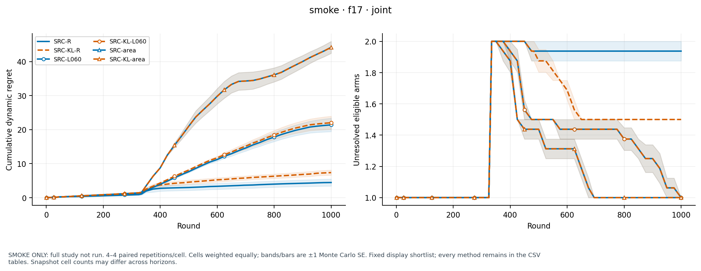
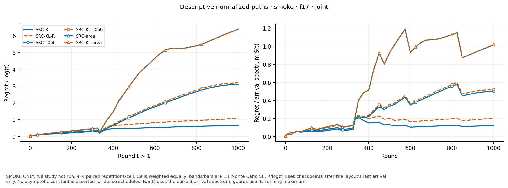
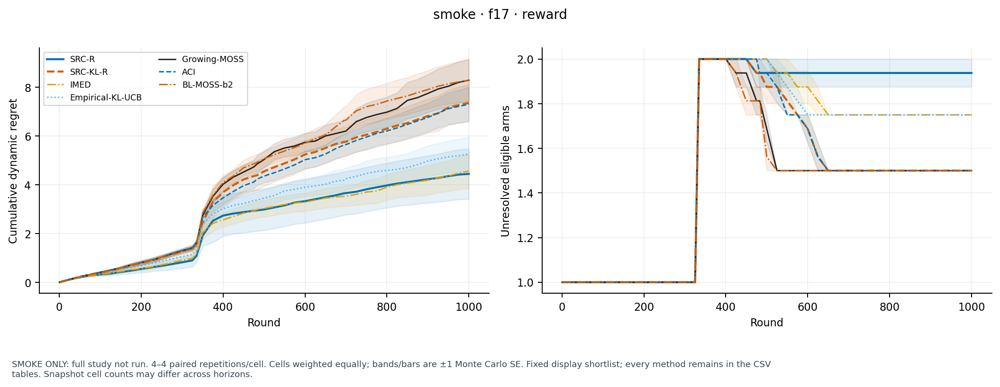
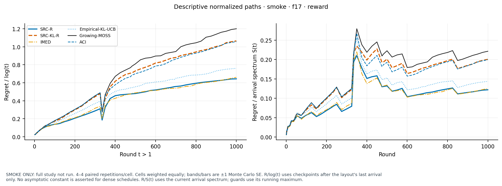
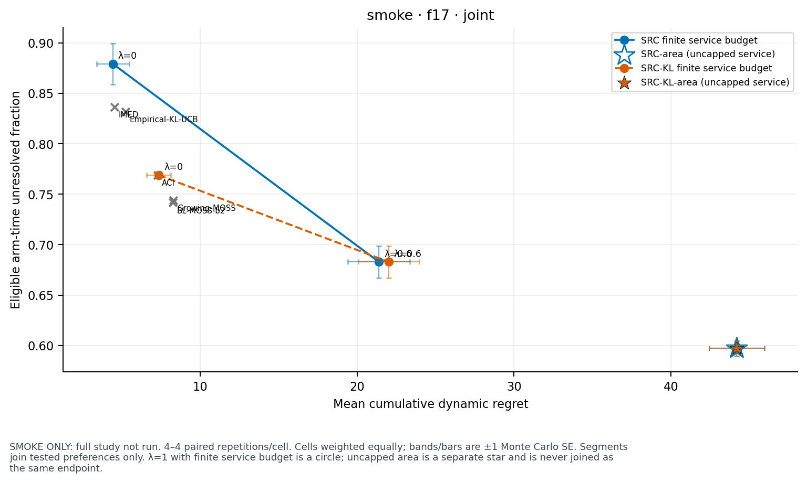
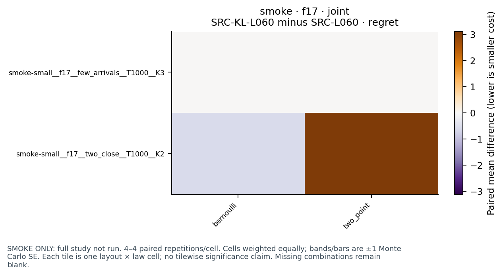
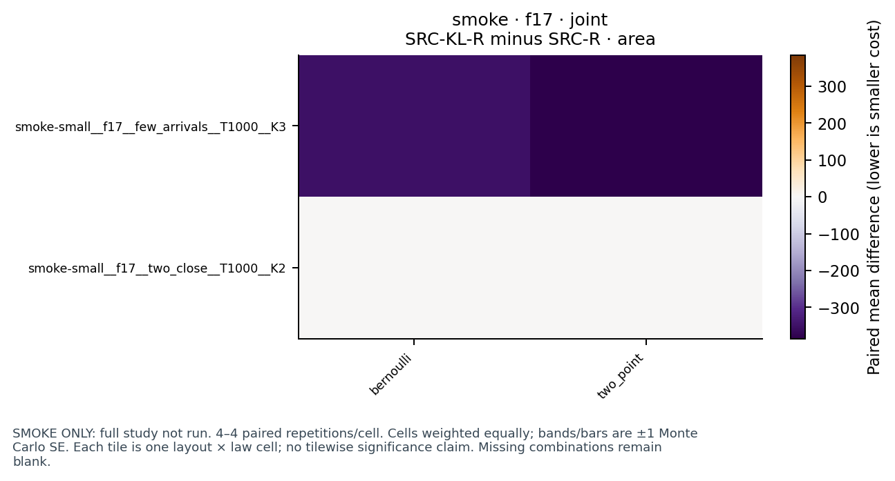
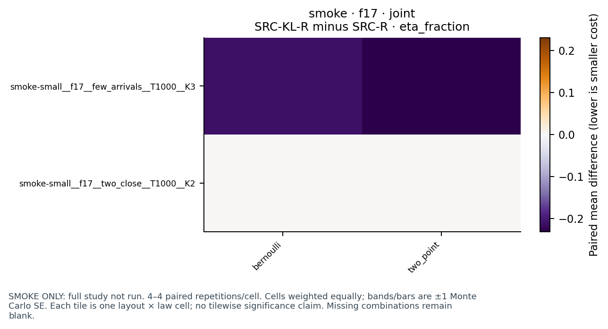
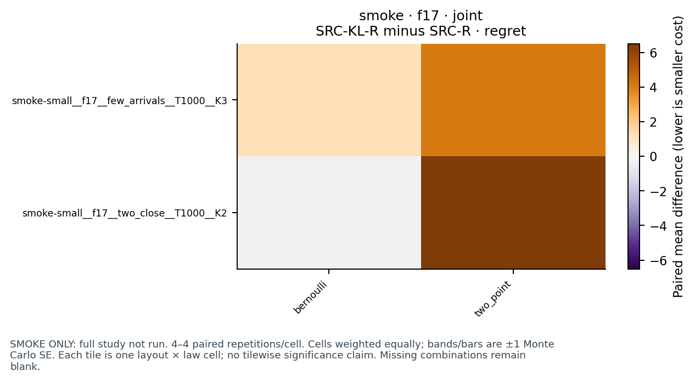
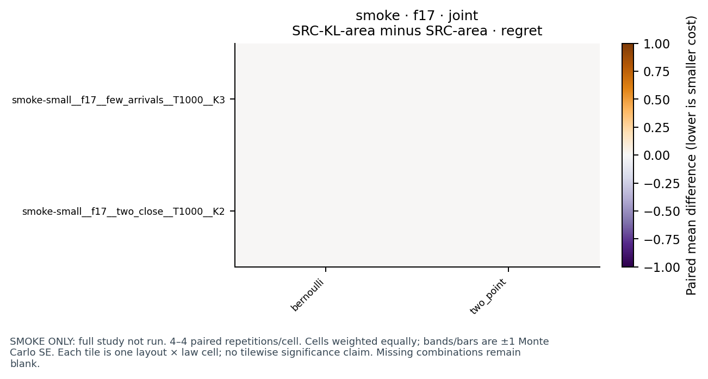
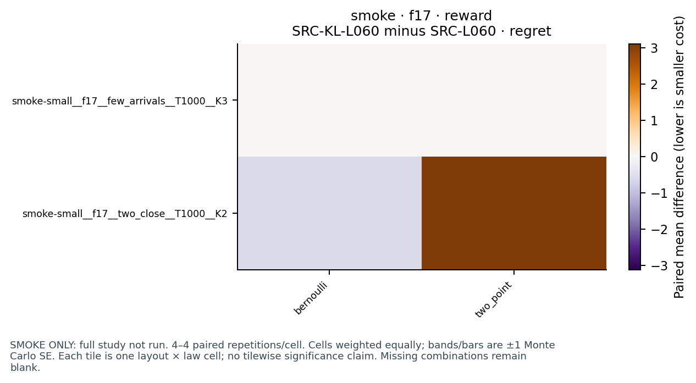
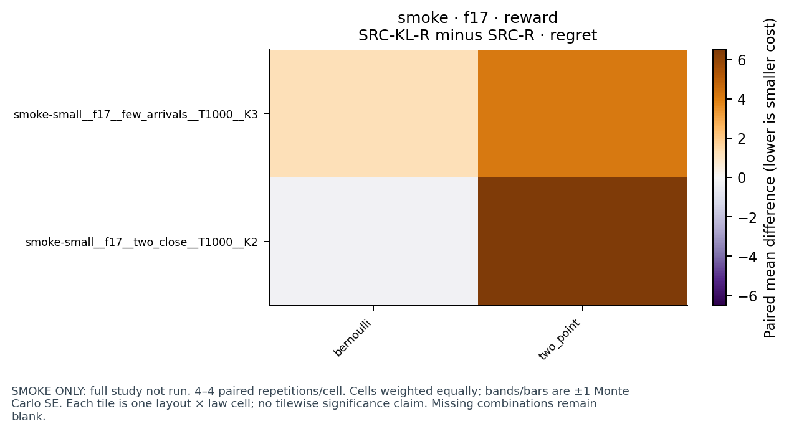
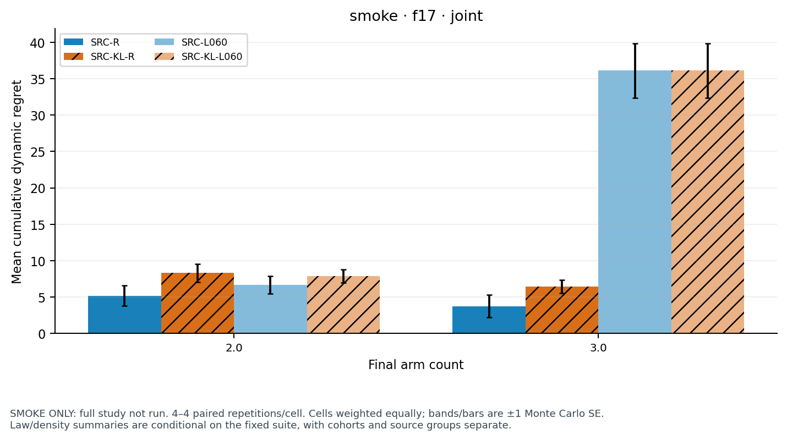
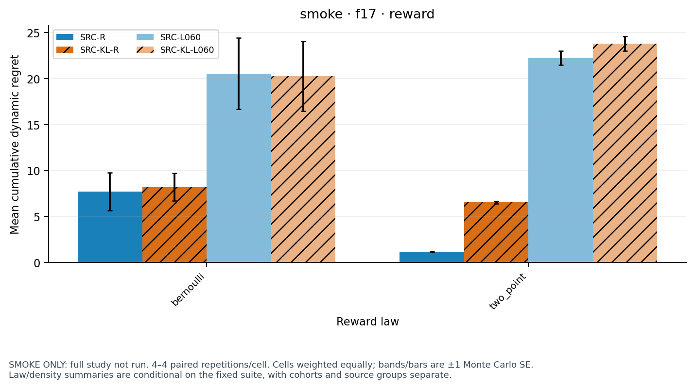
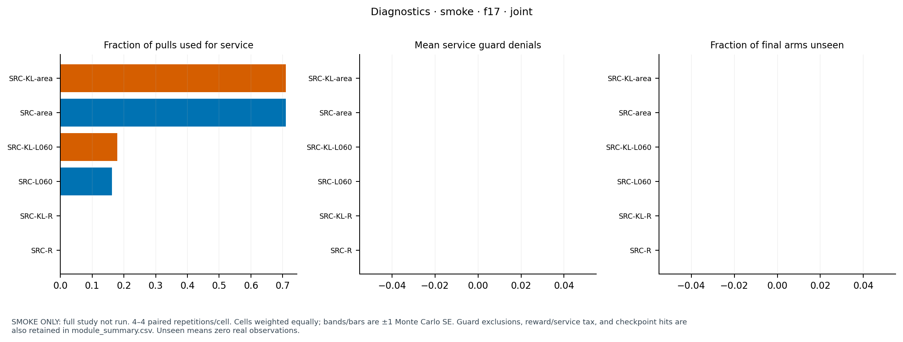
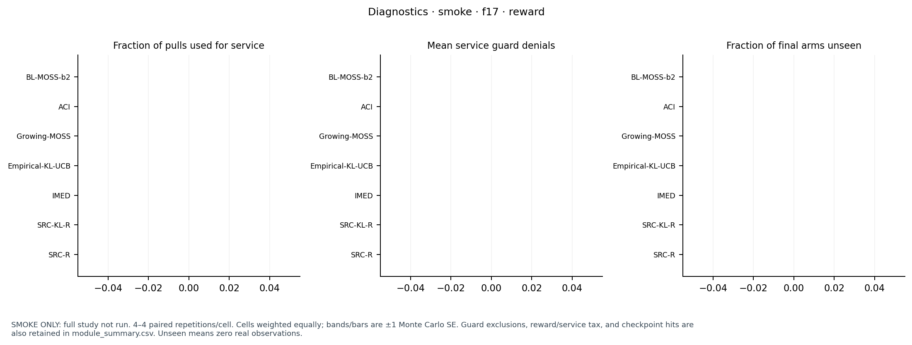
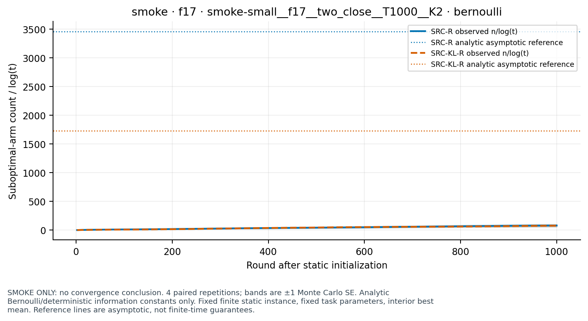